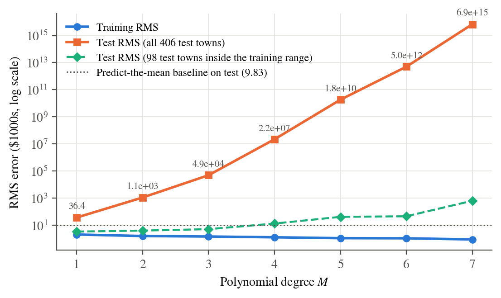
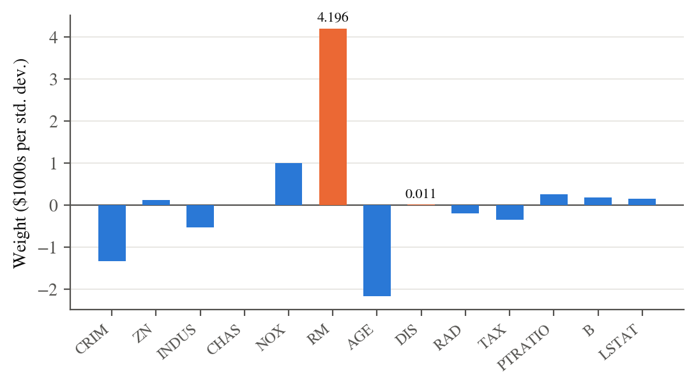
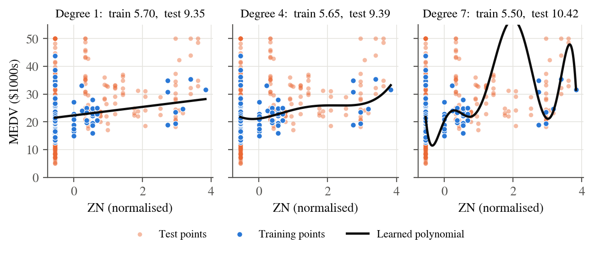
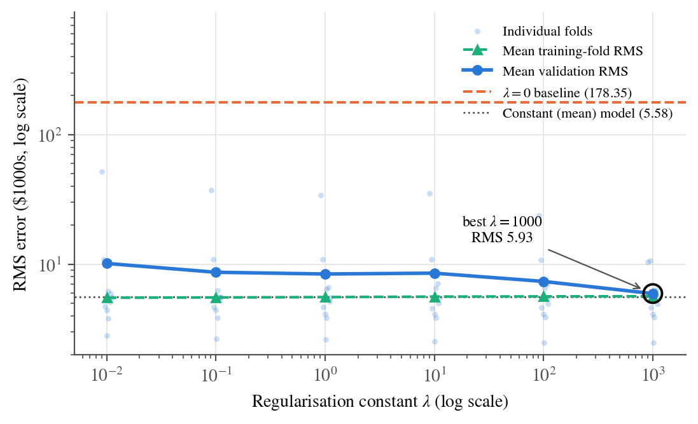
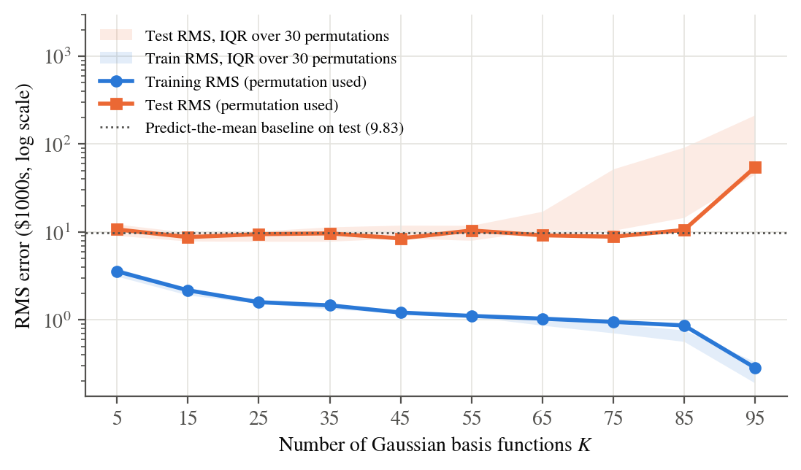
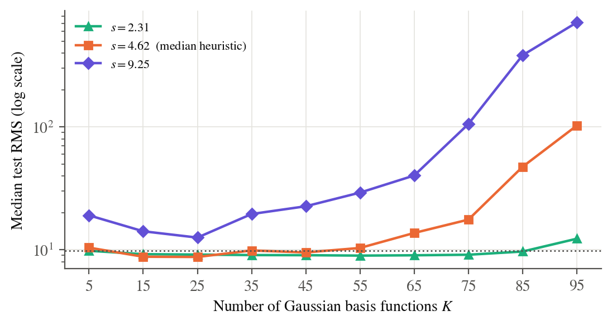
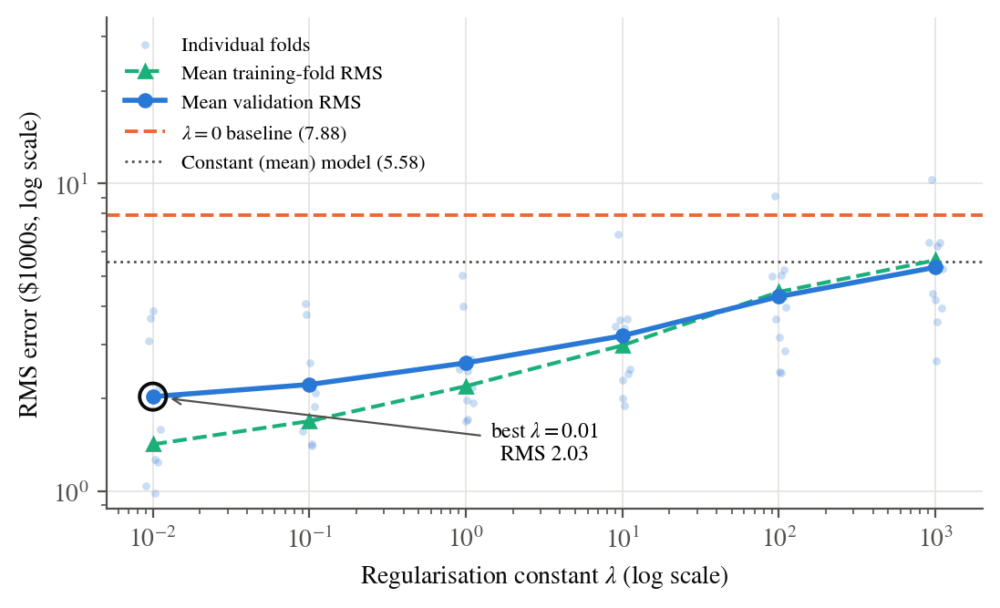
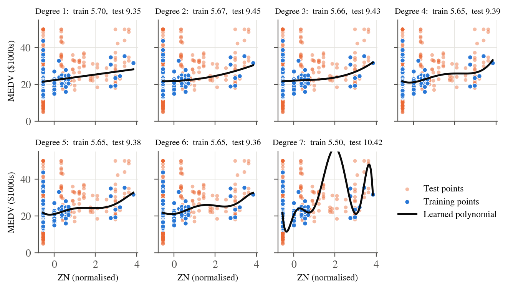
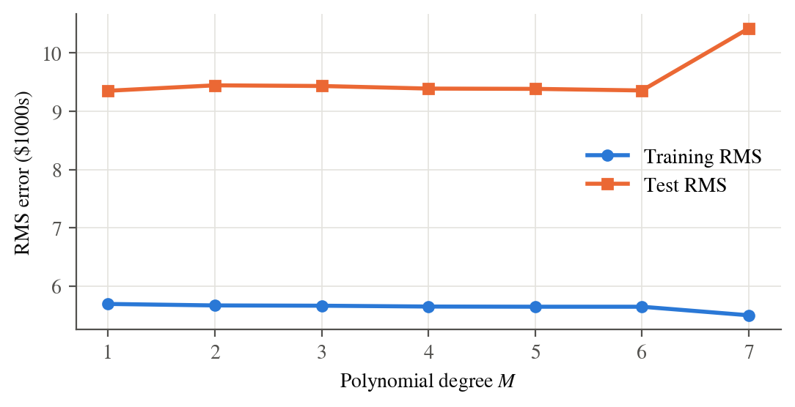

Setup common to every part
Data
The Housing data has \(N=506\) towns, \(D=13\) input features and the target \(t=\mathrm{MEDV}\), the median value of owner-occupied homes in $1000s. The DELVE page named in the assignment links its data to the StatLib archive (http://lib.stat.cmu.edu/datasets/boston). The download link on the DELVE page itself returns 404, so the StatLib file was used. It has the same 506 rows and 14 columns in the usual order
(1) CRIM, (2) ZN, (3) INDUS, (4) CHAS, (5) NOX, (6) RM, (7) AGE, (8) DIS, (9) RAD, (10) TAX, (11) PTRATIO, (12) B, (13) LSTAT; target: MEDV.
As the assignment asks, the first 100 rows are the training set and the remaining 406 rows are the test set. the section on the train/test split shows that this split is far from random, and that fact explains most of the results below.
Normalisation
Each feature is converted to a \(z\)-score using the mean and standard deviation of the training rows only, so no test information leaks into preprocessing: \[\tilde x_{nj}=\frac{x_{nj}-\bar x_j}{s_j},\qquad \bar x_j=\frac1{100}\sum_{n=1}^{100}x_{nj},\qquad s_j=\sqrt{\frac1{100}\sum_{n=1}^{100}(x_{nj}-\bar x_j)^2}.\] CHAS (the Charles River dummy) is \(0\) for all 100 training towns, so \(s_4=0\). For that feature \(s_4:=1\) is used, which makes the normalised CHAS column identically zero. The target is not normalised, so every error below is in $1000s.
Model, least-squares and ridge solutions
All models are linear in the weights, \[y(\mathbf{x},\mathbf{w})=\sum_{j=0}^{J-1}w_j\phi_j(\mathbf{x})=\mathbf{w}^{\mathsf{T}}\boldsymbol{\phi}(\mathbf{x}),\qquad \phi_0(\mathbf{x})=1 ,\] with the \(N\times J\) design matrix \(\boldsymbol{\Phi}_{nj}=\phi_j(\mathbf{x}_n)\). Minimising the sum-of-squares error \(E_D(\mathbf{w})=\tfrac12\lVert\mathbf{t}-\boldsymbol{\Phi}\mathbf{w}\rVert^2\) gives the normal equations \[\nabla_{\mathbf{w}}E_D=-\boldsymbol{\Phi}^{\mathsf{T}}(\mathbf{t}-\boldsymbol{\Phi}\mathbf{w})=\mathbf 0 \;\Longrightarrow\; \mathbf{w}_{\mathrm{ML}}=(\boldsymbol{\Phi}^{\mathsf{T}}\boldsymbol{\Phi})^{-1}\boldsymbol{\Phi}^{\mathsf{T}}\mathbf{t}=\boldsymbol{\Phi}^{\dagger}\mathbf{t}. \tag{1}\] When \(\boldsymbol{\Phi}\) is rank-deficient (it is for every polynomial fit here, see Table 1), the Moore–Penrose pseudo-inverse \(\boldsymbol{\Phi}^{\dagger}\) gives the minimum-norm least-squares solution. That is what the code uses for \(\lambda=0\).
For L2 (ridge) regularisation the bias is left unpenalised. Shrinking \(w_0\) would only pull every prediction toward \(0\) instead of toward the data. With \(\mathbf I_0=\mathrm{diag}(0,1,\dots,1)\), \[E(\mathbf{w})=\tfrac12\lVert\mathbf{t}-\boldsymbol{\Phi}\mathbf{w}\rVert^2+\tfrac{\lambda}{2}\,\mathbf{w}^{\mathsf{T}}\mathbf I_0\mathbf{w} \;\Longrightarrow\; \mathbf{w}_{\lambda}=\bigl(\lambda\mathbf I_0+\boldsymbol{\Phi}^{\mathsf{T}}\boldsymbol{\Phi}\bigr)^{-1}\boldsymbol{\Phi}^{\mathsf{T}}\mathbf{t}. \tag{2}\] Every error reported is the root-mean-square error \[E_{\mathrm{RMS}}=\sqrt{\frac1N\sum_{n=1}^{N}\bigl(y(\mathbf{x}_n,\mathbf{w})-t_n\bigr)^2}.\]
10-fold cross-validation
For (d) and (f) the 100 training points are shuffled once with a fixed seed and cut into 10 folds of 10. For each \(\lambda\) and each fold \(k\), the model is fitted on the other 90 points and \(E_{\mathrm{RMS}}^{(k)}\) is measured on fold \(k\). The CV score is the mean \(\overline{E}_{\mathrm{val}}(\lambda)=\tfrac1{10}\sum_k E_{\mathrm{RMS}}^{(k)}(\lambda)\). The same folds are used for every \(\lambda\), so the comparison between values of \(\lambda\) is paired.
The training set is not representative of the test set
The rows of the file are ordered geographically. The first 100 are mostly low-crime suburban towns, and the inner-city Boston tracts come later. Some consequences:
CRIM is at most \(1.61\) in training but reaches \(89.0\) in test. With the training statistics, the largest test \(z\)-score for CRIM is \(\mathbf{229}\), compared with at most \(\approx 4\) inside the training set. RAD and B reach \(z\approx 14\) and TAX \(z\approx 9\).
CHAS is \(0\) for every training town, but \(35\) test towns border the river.
MEDV has standard deviation \(5.90\) in training and \(9.83\) in test. Predicting the training mean for every test town already gives \(E_{\mathrm{RMS}}=9.83\). This predict-the-mean baseline is drawn on the error plots.
Only \(98\) of the \(406\) test towns have all 13 features inside the range spanned by the training towns.
So almost every test prediction is an extrapolation. Any basis function that grows without bound (polynomials) will be punished severely on the test set, and any basis function that decays (Gaussians) will fall back to the bias.
Part 1 — Polynomial basis functions
With \(M\) the degree, the basis is every power of every individual feature with no cross-terms:
\[\boldsymbol{\phi}(\mathbf{x})=\bigl[\,1,\ \tilde x_1,\dots,\tilde x_{13},\ \tilde x_1^{2},\dots,\tilde x_{13}^{2},\
\dots,\ \tilde x_1^{M},\dots,\tilde x_{13}^{M}\,\bigr]^{\mathsf{T}},
\qquad J=1+13M .\]
This is implemented in design_polynomial (the code listings below).
(a) Training and test error versus degree
Use the first 100 points for training and the rest for testing. Fit unregularised polynomial regression for degrees 1 to 7. Plot training and test RMS error versus degree.
polynomial_regression(X, t) builds \(\boldsymbol{\Phi}\) for each \(M\), solves
(1), and records \(E_{\mathrm{RMS}}\) on both sets.

| Degree \(M\) | \(J\) | rank\((\boldsymbol{\Phi})\) | Train \(E_{\mathrm{RMS}}\) | Test \(E_{\mathrm{RMS}}\) (406) | Test \(E_{\mathrm{RMS}}\) (98 in range) |
|---|---|---|---|---|---|
| 1 | 14 | 13 | 2.037 | 36.445 | 3.348 |
| 2 | 27 | 25 | 1.578 | 1097.188 | 3.976 |
| 3 | 40 | 37 | 1.449 | 48672.818 | 5.062 |
| 4 | 53 | 48 | 1.270 | \(2.19\times10^{7}\) | 13.131 |
| 5 | 66 | 54 | 1.097 | \(1.84\times10^{10}\) | 41.010 |
| 6 | 79 | 60 | 1.073 | \(5.02\times10^{12}\) | 45.318 |
| 7 | 92 | 66 | 0.881 | \(6.88\times10^{15}\) | 631.191 |
Comments.
Training error falls monotonically from \(2.04\) to \(0.88\). The models are nested, since degree \(M\) contains degree \(M-1\), so extra flexibility can only reduce the training error. At \(M=7\) there are 92 weights for 100 points.
Test error explodes, from \(36.4\) at \(M=1\) to \(6.9\times10^{15}\) at \(M=7\). Even the linear model is \(3.7\times\) worse than predicting the mean (\(9.83\)). The size of the error is mostly due to extrapolation. A test town with \(\tilde x_{\text{CRIM}}=229\) enters a degree-\(M\) model through \(229^{M}\), and \(229^{7}\approx3\times10^{16}\). Any non-zero weight on that term gives an absurd prediction.
Overfitting is visible on its own in the green curve. On the 98 test towns that need no extrapolation, the linear model is good (\(E_{\mathrm{RMS}}=3.35\), better than its training error suggests), and the error then rises steadily, \(3.35\to3.98\to5.06\to13.1\to41\to45\to631\). This is the classic picture: the training error keeps decreasing while the generalisation error has its minimum at \(M=1\).
The numerical rank is well below \(J\) from \(M=2\) upward. Some columns are exactly redundant (CHAS is all zero, RAD takes only 6 distinct values in training, ZN only 12), and the others become numerically dependent because \(\tilde x^{M}\) spans many orders of magnitude. The unregularised problem is therefore ill-posed, which is a second reason the high-degree weights are meaningless.
Best choice: \(M=1\). Every higher degree is worse on test data.
(b) Weights of the degree-1 model
Run the degree-1 regression and examine the learned weights, in particular the weight on the 6th feature (RM, average rooms per dwelling) and on the 8th feature (DIS, weighted distance to five Boston employment centres). Do they seem reasonable?
Indexing. The bias is \(w_0\) and feature \(j\) (1-based) has weight \(w_j\), so RM is \(w_6\) and DIS is \(w_8\). In the assignment’s 0-based feature numbering these are the weights it calls \(w_5\) and \(w_7\).
Normalisation. The model was fitted on \(z\)-scores, so \(w_j\) is the change in predicted MEDV ($1000s) per one training standard deviation of feature \(j\). Substituting \(\tilde x_j=(x_j-\bar x_j)/s_j\) converts back to raw units: \[y=w_0+\sum_j w_j\frac{x_j-\bar x_j}{s_j} =\underbrace{\Bigl(w_0-\sum_j\frac{w_j\bar x_j}{s_j}\Bigr)}_{\text{raw intercept}} +\sum_j\underbrace{\frac{w_j}{s_j}}_{\text{raw slope}}x_j .\]
| Weight | Feature | Unit | \(s_j\) (train) | \(w\) (normalised) | Raw slope \(w_j/s_j\) |
|---|---|---|---|---|---|
| \(w_{0}\) | bias | – | – | 22.309 | -37.90 |
| \(w_{1}\) | CRIM | per capita crime rate | 0.387 | -1.338 | -3.456 |
| \(w_{2}\) | ZN | % land zoned \(>\)25k ft\(^2\) | 22.9 | 0.123 | 0.005 |
| \(w_{3}\) | INDUS | % non-retail acres | 3.15 | -0.531 | -0.169 |
| \(w_{4}\) | CHAS | river dummy | – | 0.000 | 0.000 |
| \(w_{5}\) | NOX | NOX (pp10m) | 0.0466 | 1.003 | 21.515 |
| \(w_{6}\) | RM | rooms per dwelling | 0.488 | 4.196 | 8.591 |
| \(w_{7}\) | AGE | % built pre-1940 | 27.3 | -2.166 | -0.079 |
| \(w_{8}\) | DIS | distance index | 1.4 | 0.011 | 0.008 |
| \(w_{9}\) | RAD | highway index | 1.39 | -0.194 | -0.140 |
| \(w_{10}\) | TAX | tax per $10k | 45.7 | -0.349 | -0.008 |
| \(w_{11}\) | PTRATIO | pupils per teacher | 1.69 | 0.261 | 0.155 |
| \(w_{12}\) | B | \(1000(B_k-0.63)^2\) | 27.2 | 0.181 | 0.007 |
| \(w_{13}\) | LSTAT | % lower status | 5.67 | 0.149 | 0.026 |

RM (6th feature): \(w_6=4.196\), i.e. \(+4.2\)k per standard deviation (\(0.49\) rooms), or \(+\$8{,}590\) per extra room. This is reasonable. More rooms means a bigger house and a higher value, RM is by far the strongest single predictor in the training set (correlation with MEDV \(=0.85\)), and it has the largest weight. A bootstrap over the 100 training towns (500 resamples) gives a 95% interval of \([2.7,\,5.6]\) for \(w_6\), so the sign is reliable. The size is plausible next to a training-mean house value of $22.3k. For comparison, the same model fitted on all 506 towns gives \(w_6=2.67\), so the 100-town estimate is somewhat larger but agrees in sign and order of magnitude.
DIS (8th feature): \(w_8=0.011\), i.e. about \(+\$8\) per unit of the distance index. This is effectively zero, and it is not reasonable as a statement about housing. Being far from the employment centres means longer commutes, so holding pollution, zoning and crime fixed, one expects a negative weight. The all-506 fit gives \(w_8=-3.10\), one of the largest weights in that model. The 100-town estimate is unreliable for three reasons:
None of the inner-city towns are present. DIS spans only \(3.1\)–\(9.2\) in training against \(1.1\)–\(12.1\) overall, so there is little variation to learn from.
DIS is strongly correlated with other inputs in the training set (ZN \(0.60\), NOX \(-0.48\), CRIM \(-0.36\)). Its effect is absorbed by those features, and what remains is a small, poorly-determined partial effect.
Its bootstrap 95% interval is \([-0.70,\,0.76]\), which straddles zero. The data cannot determine even the sign.
Several other weights are also counter-intuitive, e.g. positive weights on LSTAT and PTRATIO and a large positive weight on NOX. This is the usual symptom of fitting 14 weights to 100 strongly correlated observations. Individual weights cannot be interpreted even when the fit is good.
(c) One-dimensional visualisation using only the 2nd feature
Use only one feature, \(X_n(:,2)\), and perform polynomial regression again. Plot the training points, the learned polynomial and the test points, with normalisation. Show 3 interesting (low- and high-order) fits.
\(X_n(:,2)\) uses MATLAB’s 1-based indexing, so it is the 2nd feature, ZN (proportion of
residential land zoned for lots over 25,000 ft\(^2\)). Part (d) refers to the same feature.
polynomial_regression_1d_vis normalises ZN with the training statistics
(\(\bar x=12.39\), \(s=22.85\)), so the plotted range is \(\tilde x\in[-0.54,\,3.83]\). It then fits
\(y=\sum_{m=0}^{M}w_m\tilde x^{m}\) by (1) and evaluates the curve on a dense grid.

Comments.
ZN is a weak predictor. The degree-1 fit has a gentle positive slope (towns with more large-lot zoning are slightly more expensive), but the vertical scatter dominates: training \(E_{\mathrm{RMS}}=5.70\) against a training standard deviation of \(5.90\). Of the 100 training towns, 63 have ZN \(=0\) (the vertical stack at \(\tilde x=-0.54\)), and there are only 12 distinct ZN values in training. No function of ZN can separate those 63 towns.
Degree 4 bends to follow the means of the few clusters at \(\tilde x\approx0.5\), \(1.5\) and \(3\)–\(4\). Training error barely moves (\(5.65\)) and the test error is essentially unchanged (\(9.39\) vs. \(9.35\)). The extra flexibility buys nothing.
Degree 7 shows overfitting directly. With 8 coefficients and only 12 distinct \(x\)-values, the curve passes close to individual cluster means and oscillates wildly in the gaps where there is no training data: it dips to \(\approx\$11\)k near \(\tilde x=-0.3\) and rises to $57k near \(\tilde x=2\). Training error drops to \(5.50\) and test error jumps to \(10.42\), now worse than predicting the mean (\(9.83\)).
Every model has a much larger test error than training error, because the test set contains the inner-city towns with ZN \(=0\) and MEDV anywhere from $5k to $50k. Those towns cannot be predicted from ZN.
(d) L2-regularised degree-8 fit on ZN with 10-fold cross-validation
Using the first 100 points and only the 2nd feature, fit a degree-8 polynomial with \(\lambda\in\{0,0.01,0.1,1,10,100,1000\}\). Use 10-fold CV to choose \(\lambda\) and plot average validation error versus \(\lambda\) on a semilogx plot.
polynomial_regression_reg builds the \(100\times9\) design matrix
\([1,\tilde x,\dots,\tilde x^{8}]\) for ZN, and for each \(\lambda\) and fold solves
(2) on 90 points and evaluates on the held-out 10.

| \(\lambda\) | Mean train \(E_{\mathrm{RMS}}\) | Mean val. \(E_{\mathrm{RMS}}\) | Median val. \(E_{\mathrm{RMS}}\) | Test \(E_{\mathrm{RMS}}\) |
|---|---|---|---|---|
| 0 | 5.449 | 178.353 | 5.700 | 18.645 |
| 0.01 | 5.503 | 10.132 | 5.299 | 9.829 |
| 0.1 | 5.532 | 8.659 | 5.524 | 10.019 |
| 1 | 5.565 | 8.394 | 5.336 | 9.448 |
| 10 | 5.616 | 8.523 | 5.259 | 9.355 |
| 100 | 5.639 | 7.356 | 5.242 | 9.476 |
| 1000 | 5.648 | 5.928 | 5.228 | 9.505 |
Chosen regularisation constant: \(\boldsymbol{\lambda=1000}\) (mean validation \(E_{\mathrm{RMS}}=5.93\)).
Comments.
Without regularisation the degree-8 fit is unstable. One fold holds out the town with the largest ZN, and the unregularised polynomial, evaluated just outside the range it was fitted on, predicts nonsense. That single fold has \(E_{\mathrm{RMS}}=1733\), which pulls \(\overline E_{\mathrm{val}}\) up to \(178\), although the median fold is only \(5.7\). Any \(\lambda\ge0.01\) removes that blow-up (\(10.1\)).
The CV error then decreases almost monotonically, and the minimum is at the largest value in the grid. At \(\lambda=1000\) the eight non-bias weights are shrunk so hard that the model is close to the constant predictor. The constant predictor’s own CV error is \(5.58\), slightly lower than any polynomial. On 100 training towns, ZN carries almost no information that generalises, so CV prefers the simplest model.
The training-fold error rises only from \(5.45\) to \(5.65\) across the whole grid. Regularisation costs almost nothing in fit and buys a large gain in stability. Because the optimum is at the edge of the grid, extending it (\(\lambda\to\infty\)) would continue toward the constant model’s \(5.58\).
Part 2 — Gaussian basis functions
With \(K\) centres \(\boldsymbol{\mu}_1,\dots,\boldsymbol{\mu}_K\), which are normalised training points, the basis is \[\phi_0(\mathbf{x})=1,\qquad \phi_j(\mathbf{x})=\exp\!\left(-\frac{\lVert\tilde{\mathbf{x}}-\boldsymbol{\mu}_j\rVert^2}{2s^2}\right),\quad j=1,\dots,K,\] using all 13 normalised features. The assignment does not specify the width \(s\). The standard median heuristic is used: \(s\) is set to the median Euclidean distance between pairs of normalised training points, \(s=4.62\). Each basis function then covers a “typical” distance between towns. A smaller \(s\) makes the bumps too narrow to share information between towns, and a larger \(s\) makes them nearly collinear. Figure 6 shows how sensitive the results are to this choice.
(e) Training and test error versus number of basis functions
Use the first 100 points for training and the rest for testing. Fit unregularised Gaussian basis function regression with \(K=5,15,\dots,95\) centres, chosen as the first \(K\) points of a random permutation of the training points. Plot training and test RMS versus \(K\).
gaussian_regression draws one permutation (seed 0) and uses its first \(K\)
points as centres, so the centre sets are nested as \(K\) grows. Because a single permutation is
noisy, the experiment was also repeated over 30 permutations, and the inter-quartile range is
shown as a band.

| \(K\) | Train \(E_{\mathrm{RMS}}\) | Test \(E_{\mathrm{RMS}}\) | Median test \(E_{\mathrm{RMS}}\) (30 perms.) |
|---|---|---|---|
| 5 | 3.571 | 10.680 | 10.405 |
| 15 | 2.172 | 8.753 | 8.773 |
| 25 | 1.591 | 9.450 | 8.735 |
| 35 | 1.464 | 9.644 | 9.865 |
| 45 | 1.212 | 8.454 | 9.511 |
| 55 | 1.110 | 10.409 | 10.345 |
| 65 | 1.033 | 9.168 | 13.704 |
| 75 | 0.948 | 8.842 | 17.599 |
| 85 | 0.865 | 10.540 | 47.432 |
| 95 | 0.286 | 54.490 | 102.685 |
Comments.
Training error decreases steadily, from \(3.57\) at \(K=5\) to \(0.86\) at \(K=85\), and then drops sharply to \(0.29\) at \(K=95\), where 96 weights nearly interpolate 100 points.
Test error stays at about the predict-the-mean level (\(8.5\)–\(10.7\)) up to \(K\approx85\), and then blows up to \(54\) at \(K=95\) (median over permutations \(103\)). The lowest median test error is at \(K=15\)–\(25\) (\(\approx8.7\)), only slightly better than the constant baseline. The gap between training and test error widens steadily with \(K\), which is the typical overfitting picture.
Why the test error is never much below \(9.83\): unlike polynomials, Gaussians decay away from their centres. Most test towns are far from every training town (CRIM alone puts some at \(z=229\)), so all \(\phi_j\approx0\) there and the prediction falls back to the bias \(w_0\), which is roughly the training mean. This is why the Gaussian errors are bounded near \(10\) while the polynomial errors in (a) reach \(10^{15}\).
Why it blows up at large \(K\): with \(K\to100\) the system is close to square, the weights become large and of alternating sign, and they cancel exactly at the training points but not between them. Test towns at moderate distance therefore get wildly wrong predictions. The 30-permutation bands show that the exact \(K\) at which this starts depends on which centres are drawn, but the trend does not.

(f) L2-regularised Gaussian regression with 90 basis functions
Using the first 100 points and all features, fit 90 Gaussian basis functions with \(\lambda\in\{0,0.01,0.1,1,10,100,1000\}\). Use 10-fold CV to choose \(\lambda\) and plot average validation error versus \(\lambda\) on a semilogx plot.
gaussian_regression_reg uses the same 10 folds as (d). Within each fold the 90 centres
are drawn at random from that fold’s 90 training points only, so a validation town is never
also a centre and nothing leaks from the held-out fold. With 100 points and 10 folds this means
every training point of the fold is a centre. The \(90\times91\) design matrix has more
weights than equations, so for \(\lambda=0\) the pseudo-inverse returns the minimum-norm
interpolant, with training-fold error \(0\).

| \(\lambda\) | Mean train \(E_{\mathrm{RMS}}\) | Mean val. \(E_{\mathrm{RMS}}\) | Median val. \(E_{\mathrm{RMS}}\) | Test \(E_{\mathrm{RMS}}\) |
|---|---|---|---|---|
| 0 | 0.000 | 7.884 | 4.535 | 122.697 |
| 0.01 | 1.421 | 2.030 | 1.496 | 9.503 |
| 0.1 | 1.690 | 2.223 | 1.806 | 9.636 |
| 1 | 2.196 | 2.613 | 2.316 | 9.958 |
| 10 | 2.979 | 3.200 | 2.939 | 9.639 |
| 100 | 4.446 | 4.293 | 3.795 | 9.417 |
| 1000 | 5.636 | 5.346 | 4.842 | 9.731 |
Chosen regularisation constant: \(\boldsymbol{\lambda=0.01}\) (mean validation \(E_{\mathrm{RMS}}=2.03\)). \(\lambda=0.1\) is a close second (\(2.22\)).
Comments.
\(\lambda=0\) interpolates the 90 training-fold points exactly (training error \(0\)) but validates at \(7.88\), which is worse than the constant model (\(5.58\)). This is pure overfitting.
A very small penalty is enough to fix this. At \(\lambda=0.01\) the validation error falls to \(2.03\), a factor of 2.7 better than the constant model. Using all 13 features with a flexible, local basis captures most of the structure that is inside the training distribution.
As \(\lambda\) grows past \(0.01\) the training and validation errors rise together and converge (at \(\lambda\ge100\) the two curves meet). This is underfitting: the weights are shrunk toward \(0\) and the model approaches the constant predictor (\(5.35\) at \(\lambda=1000\), near the constant model’s \(5.58\)). The U-shape (overfit at \(\lambda=0\), underfit at large \(\lambda\), minimum in between) is the expected bias–variance trade-off.
Compared with (d), the optimum is at the opposite end of the grid. With 13 informative features the model has real signal to fit, so little shrinkage is wanted. With ZN alone there is almost nothing to fit, so maximum shrinkage wins.
The test check gives \(9.50\) at \(\lambda=0.01\), against \(122.7\) unregularised. Regularisation helps on test data too, but the absolute value stays near the predict-the-mean level for the extrapolation reason explained in (e). Cross-validation inside the first 100 towns cannot anticipate a test set that lies outside their range.
Summary
| Part | Result |
|---|---|
| (a) | Training RMS falls \(2.04\to0.88\) (\(M=1\to7\)). Test RMS explodes \(36.4\to6.9\times10^{15}\) because of extrapolation, and on in-range test towns it rises \(3.35\to631\) (overfitting). Best \(M=1\). |
| (b) | RM: \(w_6=4.196\) (\(+\$8.6\)k per room), reasonable. DIS: \(w_8=0.011\) (\(\approx0\)), not reasonable (expected negative, \(-3.10\) on all data), because DIS is poorly identified in the first 100 towns. |
| (c) | ZN alone is weak (train \(\approx5.6\) vs. std \(5.9\)). Degree 7 oscillates between the 12 distinct ZN values and has test RMS \(10.4>9.83\). |
| (d) | Degree 8 on ZN: CV picks \(\boldsymbol{\lambda=1000}\) (\(5.93\)), essentially the constant model. \(\lambda=0\) gives \(178\). |
| (e) | Gaussian, \(s=4.62\): training RMS falls \(3.57\to0.29\). Test RMS \(\approx\) baseline up to \(K=85\), then \(54\) at \(K=95\) (overfitting). |
| (f) | 90 Gaussians, all features: CV picks \(\boldsymbol{\lambda=0.01}\) (\(2.03\)), against \(7.88\) for \(\lambda=0\) and \(5.35\) for \(\lambda=1000\). |
Additional figures


Code
The two files below reproduce every number, table and figure in this report. Run
python make_report.py from the code/ folder (requires NumPy and Matplotlib).
housing.data is the 506\(\times\)14 StatLib table with whitespace-separated columns.
regression.py — the five required functions
"""SYDE 572 - Assignment 2: linear basis function regression on the Boston Housing data.
Implements the five functions asked for in the assignment:
polynomial_regression (a, b) polynomial basis, degrees 1..7, all 13 features
polynomial_regression_1d_vis (c) polynomial basis on the 2nd feature only, with plots
polynomial_regression_reg (d) L2-regularised degree-8 fit, 10-fold CV over lambda
gaussian_regression (e) Gaussian basis, K = 5, 15, ..., 95 centres
gaussian_regression_reg (f) L2-regularised 90-centre Gaussian fit, 10-fold CV
Conventions used everywhere:
* Inputs are standardised with the mean / std of the 100 training points (z-scores).
A feature that is constant on the training set (CHAS) keeps std = 1, so it becomes 0.
* The target (MEDV, in $1000s) is not normalised, so every RMS error is in $1000s.
* The design matrix always has a bias column phi_0 = 1, and the bias is not penalised.
* lambda = 0 uses the pseudo-inverse (minimum-norm least squares), so rank-deficient
design matrices are handled.
"""
import numpy as np
FEATURES = ["CRIM", "ZN", "INDUS", "CHAS", "NOX", "RM", "AGE",
"DIS", "RAD", "TAX", "PTRATIO", "B", "LSTAT"]
N_TRAIN = 100
LAMBDAS = [0, 0.01, 0.1, 1, 10, 100, 1000]
# ----------------------------------------------------------------------------- data
def load_data(path="housing.data"):
"""Return X (506 x 13 raw features) and t (506 targets, MEDV in $1000s)."""
data = np.loadtxt(path)
return data[:, :13], data[:, 13]
def normalize(X_ref, *others):
"""Standardise X_ref with its own mean/std and apply the same map to the other arrays."""
mu = X_ref.mean(axis=0)
sd = X_ref.std(axis=0)
sd = np.where(sd > 0, sd, 1.0)
out = [(X_ref - mu) / sd] + [(X - mu) / sd for X in others]
return out, mu, sd
def split(X, t, n_train=N_TRAIN):
return X[:n_train], t[:n_train], X[n_train:], t[n_train:]
# ----------------------------------------------------------------------------- bases
def design_polynomial(X, degree):
"""[1, x_1..x_D, x_1^2..x_D^2, ..., x_1^M..x_D^M] (monomials, no cross terms)."""
X = np.atleast_2d(X.T).T
cols = [np.ones((X.shape[0], 1))] + [X ** p for p in range(1, degree + 1)]
return np.hstack(cols)
def design_gaussian(X, centres, s):
"""[1, exp(-||x - mu_j||^2 / (2 s^2)) for j = 1..K]."""
sq = ((X[:, None, :] - centres[None, :, :]) ** 2).sum(axis=2)
return np.hstack([np.ones((X.shape[0], 1)), np.exp(-sq / (2.0 * s ** 2))])
# ----------------------------------------------------------------------------- fitting
def fit(Phi, t, lam=0.0):
"""Least squares w = argmin ||t - Phi w||^2 + lam ||w_{1:}||^2 (bias not penalised)."""
if lam == 0:
return np.linalg.pinv(Phi) @ t
I = np.eye(Phi.shape[1])
I[0, 0] = 0.0
return np.linalg.solve(Phi.T @ Phi + lam * I, Phi.T @ t)
def median_width(Xn):
"""Kernel-width heuristic: median Euclidean distance between pairs of (normalised) points."""
d = np.sqrt(((Xn[:, None, :] - Xn[None, :, :]) ** 2).sum(axis=2))
return float(np.median(d[np.triu_indices(len(Xn), 1)]))
def rms(Phi, w, t):
return float(np.sqrt(np.mean((Phi @ w - t) ** 2)))
def kfold_indices(n, k=10, seed=0):
"""Shuffle 0..n-1 once and cut it into k folds of (almost) equal size."""
perm = np.random.default_rng(seed).permutation(n)
return np.array_split(perm, k)
# ----------------------------------------------------------------------------- (a), (b)
def polynomial_regression(X, t, degrees=range(1, 8), n_train=N_TRAIN):
"""Unregularised polynomial regression on all features.
Returns a dict with the degrees, the train / test RMS for each degree and the
weight vectors (index 0 is the bias, index j is feature j for degree 1).
"""
Xtr, ttr, Xte, tte = split(X, t, n_train)
(Xtr, Xte), mu, sd = normalize(Xtr, Xte)
out = {"degree": [], "train": [], "test": [], "weights": [], "rank": [], "n_params": []}
for M in degrees:
Ptr, Pte = design_polynomial(Xtr, M), design_polynomial(Xte, M)
w = fit(Ptr, ttr)
out["degree"].append(M)
out["train"].append(rms(Ptr, w, ttr))
out["test"].append(rms(Pte, w, tte))
out["weights"].append(w)
out["rank"].append(int(np.linalg.matrix_rank(Ptr)))
out["n_params"].append(Ptr.shape[1])
out["mu"], out["sd"] = mu, sd
return out
# ----------------------------------------------------------------------------- (c)
def polynomial_regression_1d_vis(X, t, feature=1, degrees=range(1, 8), n_train=N_TRAIN):
"""Polynomial regression on a single feature (default: the 2nd feature, ZN).
Returns the normalised train/test inputs, a dense grid, and the fitted curve for every
degree so the caller can plot training points, test points and the learned polynomial.
"""
Xtr, ttr, Xte, tte = split(X[:, [feature]], t, n_train)
(xtr, xte), mu, sd = normalize(Xtr, Xte)
xtr, xte = xtr[:, 0], xte[:, 0]
lo, hi = min(xtr.min(), xte.min()), max(xtr.max(), xte.max())
grid = np.linspace(lo, hi, 600)
fits = {}
for M in degrees:
w = fit(design_polynomial(xtr, M), ttr)
fits[M] = {"w": w,
"curve": design_polynomial(grid, M) @ w,
"train": rms(design_polynomial(xtr, M), w, ttr),
"test": rms(design_polynomial(xte, M), w, tte)}
return {"xtr": xtr, "ttr": ttr, "xte": xte, "tte": tte, "grid": grid,
"fits": fits, "mu": float(mu[0]), "sd": float(sd[0]), "feature": feature}
# ----------------------------------------------------------------------------- (d)
def polynomial_regression_reg(X, t, feature=1, degree=8, lambdas=LAMBDAS,
k=10, n_train=N_TRAIN, seed=0):
"""L2-regularised degree-`degree` regression on one feature, 10-fold CV over lambda.
The first n_train points are the only data used for selection. Inputs are normalised
with the statistics of all n_train points (a fixed, label-free preprocessing step).
Returns mean / per-fold validation RMS for each lambda, the chosen lambda, and the
test RMS of the model refit on all n_train points with that lambda.
"""
Xtr, ttr, Xte, tte = split(X[:, [feature]], t, n_train)
(xtr, xte), _, _ = normalize(Xtr, Xte)
Ptr, Pte = design_polynomial(xtr[:, 0], degree), design_polynomial(xte[:, 0], degree)
folds = kfold_indices(len(ttr), k, seed)
val = np.zeros((len(lambdas), k))
trn = np.zeros((len(lambdas), k))
for i, lam in enumerate(lambdas):
for f, vidx in enumerate(folds):
tidx = np.setdiff1d(np.arange(len(ttr)), vidx)
w = fit(Ptr[tidx], ttr[tidx], lam)
val[i, f] = rms(Ptr[vidx], w, ttr[vidx])
trn[i, f] = rms(Ptr[tidx], w, ttr[tidx])
const = np.mean([np.sqrt(np.mean((ttr[v] - np.delete(ttr, v).mean()) ** 2)) for v in folds])
mean_val = val.mean(axis=1)
best = int(np.argmin(mean_val))
test = [rms(Pte, fit(Ptr, ttr, lam), tte) for lam in lambdas]
return {"lambdas": list(lambdas), "val": val, "mean_val": mean_val,
"mean_train": trn.mean(axis=1), "best_index": best,
"best_lambda": lambdas[best], "test": test, "const_val": float(const)}
# ----------------------------------------------------------------------------- (e)
def gaussian_regression(X, t, Ks=range(5, 100, 10), s=None, n_train=N_TRAIN, seed=0):
"""Unregularised Gaussian basis function regression on all features.
One random permutation of the training points is drawn; the first K points of it are
the centres for K basis functions (so the centre sets are nested as K grows).
s = None uses the median pairwise distance of the normalised training inputs.
"""
Xtr, ttr, Xte, tte = split(X, t, n_train)
(Xtr, Xte), _, _ = normalize(Xtr, Xte)
s = median_width(Xtr) if s is None else s
perm = np.random.default_rng(seed).permutation(len(ttr))
out = {"K": [], "train": [], "test": []}
for K in Ks:
C = Xtr[perm[:K]]
Ptr, Pte = design_gaussian(Xtr, C, s), design_gaussian(Xte, C, s)
w = fit(Ptr, ttr)
out["K"].append(K)
out["train"].append(rms(Ptr, w, ttr))
out["test"].append(rms(Pte, w, tte))
out["s"] = s
return out
# ----------------------------------------------------------------------------- (f)
def gaussian_regression_reg(X, t, K=90, s=None, lambdas=LAMBDAS, k=10,
n_train=N_TRAIN, seed=0):
"""L2-regularised Gaussian regression (all features, K centres), 10-fold CV over lambda.
Within each fold the K centres are drawn at random from that fold's training points only,
so the held-out fold never contributes a centre. With 100 points and 10 folds each
training fold has exactly 90 points, so for K = 90 every training point is a centre.
The same fold split and centres are used for every lambda.
"""
Xtr, ttr, Xte, tte = split(X, t, n_train)
(Xtr, Xte), _, _ = normalize(Xtr, Xte)
s = median_width(Xtr) if s is None else s
rng = np.random.default_rng(seed)
folds = kfold_indices(len(ttr), k, seed)
val = np.zeros((len(lambdas), k))
trn = np.zeros((len(lambdas), k))
for f, vidx in enumerate(folds):
tidx = np.setdiff1d(np.arange(len(ttr)), vidx)
C = Xtr[rng.permutation(tidx)[:K]]
Pt, Pv = design_gaussian(Xtr[tidx], C, s), design_gaussian(Xtr[vidx], C, s)
for i, lam in enumerate(lambdas):
w = fit(Pt, ttr[tidx], lam)
val[i, f] = rms(Pv, w, ttr[vidx])
trn[i, f] = rms(Pt, w, ttr[tidx])
const = np.mean([np.sqrt(np.mean((ttr[v] - np.delete(ttr, v).mean()) ** 2)) for v in folds])
mean_val = val.mean(axis=1)
best = int(np.argmin(mean_val))
# refit on all 100 training points with K centres drawn from them, report test RMS
C = Xtr[rng.permutation(len(ttr))[:K]]
Ptr, Pte = design_gaussian(Xtr, C, s), design_gaussian(Xte, C, s)
test = [rms(Pte, fit(Ptr, ttr, lam), tte) for lam in lambdas]
return {"lambdas": list(lambdas), "val": val, "mean_val": mean_val,
"mean_train": trn.mean(axis=1), "best_index": best,
"best_lambda": lambdas[best], "test": test, "const_val": float(const), "s": s}
make_report.py — experiments, figures and tables
"""Run every part of Assignment 2 and write the figures, LaTeX tables and results.json
used by ../report.tex. Usage: python make_report.py
"""
import json
import os
import matplotlib
matplotlib.use("Agg")
import matplotlib.pyplot as plt
import numpy as np
from regression import (FEATURES, LAMBDAS, N_TRAIN, design_polynomial, gaussian_regression,
gaussian_regression_reg, load_data, polynomial_regression,
polynomial_regression_1d_vis, polynomial_regression_reg)
HERE = os.path.dirname(os.path.abspath(__file__))
FIG = os.path.join(HERE, "..", "figures")
TAB = os.path.join(HERE, "..", "tables")
os.makedirs(FIG, exist_ok=True)
os.makedirs(TAB, exist_ok=True)
# ----------------------------------------------------------------------------- style
TRAIN, TEST, THIRD = "#2a78d6", "#eb6834", "#1baf7a"
INK, INK2, GRID = "#0b0b0b", "#52514e", "#e4e3de"
plt.rcParams.update({
"font.family": "STIXGeneral", "mathtext.fontset": "stix", "font.size": 10,
"axes.edgecolor": INK2, "axes.labelcolor": INK, "axes.linewidth": 0.8,
"axes.spines.top": False, "axes.spines.right": False,
"axes.grid": True, "grid.color": GRID, "grid.linewidth": 0.6,
"xtick.color": INK2, "ytick.color": INK2, "legend.frameon": False,
"lines.linewidth": 2, "lines.markersize": 5, "savefig.bbox": "tight",
"savefig.dpi": 200,
})
def save(fig, name):
fig.savefig(os.path.join(FIG, name + ".pdf"))
fig.savefig(os.path.join(FIG, name + ".png"))
plt.close(fig)
def fmt(x, nd=3):
"""Number for a LaTeX table: plain for normal sizes, a x 10^k for huge ones."""
if abs(x) >= 1e5:
m, e = f"{x:.2e}".split("e")
return f"${m}\\times10^{{{int(e)}}}$"
return f"{x:.{nd}f}"
def lam_tex(lam):
return "0" if lam == 0 else f"{lam:g}"
X, t = load_data(os.path.join(HERE, "housing.data"))
R = {}
# ============================================================================= (a)
a = polynomial_regression(X, t)
R["a"] = {k: a[k] for k in ("degree", "train", "test", "rank", "n_params")}
# extra diagnostic: test RMS restricted to the test towns whose 13 features all lie inside the
# range spanned by the 100 training towns (no extrapolation needed)
Ztr, Zte = (X[:N_TRAIN] - a["mu"]) / a["sd"], (X[N_TRAIN:] - a["mu"]) / a["sd"]
inside = np.all((Zte >= Ztr.min(0) - 1e-9) & (Zte <= Ztr.max(0) + 1e-9), axis=1)
a["test_inside"] = [float(np.sqrt(np.mean((design_polynomial(Zte[inside], M) @ w_ - t[N_TRAIN:][inside]) ** 2)))
for M, w_ in zip(a["degree"], a["weights"])]
R["a"]["test_inside"], R["a"]["n_inside"] = a["test_inside"], int(inside.sum())
fig, ax = plt.subplots(figsize=(6.2, 3.4))
ax.semilogy(a["degree"], a["train"], "o-", color=TRAIN, label="Training RMS")
ax.semilogy(a["degree"], a["test"], "s-", color=TEST, label="Test RMS (all 406 test towns)")
ax.semilogy(a["degree"], a["test_inside"], "D--", color=THIRD, lw=1.6, ms=4.5,
label=f"Test RMS ({inside.sum()} test towns inside the training range)")
ax.axhline(np.std(t[N_TRAIN:]), color=INK2, lw=1, ls=":",
label=f"Predict-the-mean baseline on test ({np.std(t[N_TRAIN:]):.2f})")
for d, e in zip(a["degree"], a["test"]):
ax.annotate(f"{e:.3g}" if e < 1e4 else f"{e:.1e}", (d, e), textcoords="offset points",
xytext=(0, 7), ha="center", fontsize=7.5, color=INK2)
ax.set_xlabel("Polynomial degree $M$")
ax.set_ylabel("RMS error ($1000s, log scale)")
ax.set_xticks(a["degree"])
ax.legend(loc="upper left", fontsize=8.5)
save(fig, "a_poly_rms")
rows = [f"{d} & {n} & {rk} & {fmt(tr)} & {fmt(te)} & {fmt(ti)} \\\\"
for d, n, rk, tr, te, ti in zip(a["degree"], a["n_params"], a["rank"], a["train"],
a["test"], a["test_inside"])]
open(os.path.join(TAB, "a_poly.tex"), "w").write("\n".join(rows) + "\n")
# ============================================================================= (b)
w = a["weights"][0]
w = np.where(np.abs(w) < 1e-9, 0.0, w) # CHAS is all-zero in training -> weight exactly 0
mu, sd = a["mu"], a["sd"]
w_raw = w[1:] / sd # effect of +1 raw unit of feature j
b_raw = w[0] - np.sum(w[1:] * mu / sd) # intercept in raw units
R["b"] = {"w": w.tolist(), "w_raw": w_raw.tolist(), "b_raw": float(b_raw),
"mu": mu.tolist(), "sd": sd.tolist()}
units = ["per capita crime rate", "\\% land zoned $>$25k ft$^2$", "\\% non-retail acres",
"river dummy", "NOX (pp10m)", "rooms per dwelling", "\\% built pre-1940",
"distance index", "highway index", "tax per \\$10k", "pupils per teacher",
"$1000(B_k-0.63)^2$", "\\% lower status"]
rows = [f"$w_{{0}}$ & bias & -- & -- & {w[0]:.3f} & {b_raw:.2f} \\\\"]
for j, name in enumerate(FEATURES):
hl = "\\rowcolor{boxbg} " if name in ("RM", "DIS") else ""
sdj = "--" if name == "CHAS" else f"{sd[j]:.3g}"
rows.append(f"{hl}$w_{{{j + 1}}}$ & {name} & {units[j]} & {sdj} & {w[j + 1]:.3f} & "
f"{w_raw[j]:.3f} \\\\")
open(os.path.join(TAB, "b_weights.tex"), "w").write("\n".join(rows) + "\n")
fig, ax = plt.subplots(figsize=(6.2, 3.0))
order = np.arange(13)
cols = [TEST if FEATURES[j] in ("RM", "DIS") else TRAIN for j in order]
ax.bar(order, w[1:], color=cols, width=0.62, zorder=3)
ax.axhline(0, color=INK2, lw=0.8)
ax.set_xticks(order)
ax.set_xticklabels(FEATURES, rotation=40, ha="right", fontsize=8.5)
ax.set_ylabel("Weight ($1000s per std. dev.)")
for j in (5, 7):
ax.annotate(f"{w[j + 1]:.3f}", (j, w[j + 1]), textcoords="offset points",
xytext=(0, 4 if w[j + 1] >= 0 else -11), ha="center", fontsize=8, color=INK)
ax.grid(axis="x", visible=False)
save(fig, "b_weights")
# ============================================================================= (c)
c = polynomial_regression_1d_vis(X, t, feature=1)
R["c"] = {"degree": list(c["fits"]), "train": [f["train"] for f in c["fits"].values()],
"test": [f["test"] for f in c["fits"].values()], "mu": c["mu"], "sd": c["sd"],
"n_unique_train": int(len(np.unique(c["xtr"])))}
def panel(ax, M, show_legend=False):
f = c["fits"][M]
ax.scatter(c["xte"], c["tte"], s=12, color=TEST, alpha=0.45, lw=0, label="Test points", zorder=2)
ax.scatter(c["xtr"], c["ttr"], s=18, color=TRAIN, edgecolor="white", lw=0.5,
label="Training points", zorder=3)
ax.plot(c["grid"], f["curve"], color=INK, lw=1.8, label="Learned polynomial", zorder=4)
ax.set_title(f"Degree {M}: train {f['train']:.2f}, test {f['test']:.2f}", fontsize=9.5)
ax.set_ylim(0, 55)
if show_legend:
ax.legend(loc="upper right", fontsize=8)
SHOW = (1, 4, 7)
fig, axes = plt.subplots(1, 3, figsize=(6.6, 2.7), sharey=True)
for ax, M in zip(axes, SHOW):
panel(ax, M, show_legend=False)
ax.set_xlabel("ZN (normalised)")
axes[0].set_ylabel("MEDV ($1000s)")
h, l = axes[0].get_legend_handles_labels()
fig.legend(h, l, loc="lower center", ncol=3, bbox_to_anchor=(0.5, -0.03), fontsize=8.5)
fig.tight_layout(rect=(0, 0.05, 1, 1))
save(fig, "c_1d_selected")
fig, axes = plt.subplots(2, 4, figsize=(6.8, 3.9), sharey=True, sharex=True)
for k, ax in enumerate(axes.flat):
if k < 7:
panel(ax, k + 1)
ax.title.set_fontsize(8)
else:
ax.axis("off")
for ax in axes[1]:
ax.set_xlabel("ZN (normalised)", fontsize=8.5)
for ax in axes[:, 0]:
ax.set_ylabel("MEDV ($1000s)", fontsize=8.5)
h, l = axes[0, 0].get_legend_handles_labels()
axes[1, 3].legend(h, l, loc="center", fontsize=8.5)
fig.tight_layout()
save(fig, "c_1d_all")
fig, ax = plt.subplots(figsize=(6.2, 2.8))
ax.plot(R["c"]["degree"], R["c"]["train"], "o-", color=TRAIN, label="Training RMS")
ax.plot(R["c"]["degree"], R["c"]["test"], "s-", color=TEST, label="Test RMS")
ax.set_xlabel("Polynomial degree $M$")
ax.set_ylabel("RMS error ($1000s)")
ax.legend(loc="center right")
save(fig, "c_1d_rms")
# ============================================================================= (d), (f)
def cv_plot(res, name, title_note):
lams = np.array(res["lambdas"][1:], float)
val = res["val"][1:]
fig, ax = plt.subplots(figsize=(6.2, 3.5))
for f in range(val.shape[1]):
ax.scatter(lams * np.exp(np.random.default_rng(f).uniform(-0.12, 0.12)), val[:, f],
s=10, color=TRAIN, alpha=0.25, lw=0, zorder=2,
label="Individual folds" if f == 0 else None)
ax.semilogx(lams, res["mean_train"][1:], "^--", color=THIRD, lw=1.5, ms=5,
label="Mean training-fold RMS", zorder=3)
ax.semilogx(lams, res["mean_val"][1:], "o-", color=TRAIN, label="Mean validation RMS", zorder=4)
ax.axhline(res["mean_val"][0], color=TEST, lw=1.4, ls="--",
label=f"$\\lambda=0$ baseline ({res['mean_val'][0]:.2f})")
ax.axhline(res["const_val"], color=INK2, lw=1, ls=":",
label=f"Constant (mean) model ({res['const_val']:.2f})")
b = res["best_index"]
ax.scatter([res["lambdas"][b]], [res["mean_val"][b]], s=110, facecolor="none",
edgecolor=INK, lw=1.4, zorder=5)
ax.annotate(f"best $\\lambda={res['lambdas'][b]:g}$\nRMS {res['mean_val'][b]:.2f}",
(res["lambdas"][b], res["mean_val"][b]), textcoords="axes fraction",
xytext=(0.7, 0.33) if title_note == "d" else (0.5, 0.1), ha="center", fontsize=8.5,
arrowprops=dict(arrowstyle="->", color=INK2, lw=0.8, shrinkB=7))
ax.set_yscale("log")
ax.set_xlabel("Regularisation constant $\\lambda$ (log scale)")
ax.set_ylabel("RMS error ($1000s, log scale)")
ax.legend(loc="upper left" if title_note == "f" else "upper right", fontsize=8,
ncol=1)
return fig, ax
d = polynomial_regression_reg(X, t, feature=1, degree=8)
R["d"] = {k: (v.tolist() if isinstance(v, np.ndarray) else v) for k, v in d.items()}
fig, ax = cv_plot(d, "d", "d")
ax.set_ylim(top=ax.get_ylim()[1] * 4)
save(fig, "d_poly_reg")
f = gaussian_regression_reg(X, t, K=90)
R["f"] = {k: (v.tolist() if isinstance(v, np.ndarray) else v) for k, v in f.items()}
fig, ax = cv_plot(f, "f", "f")
ax.set_ylim(top=ax.get_ylim()[1] * 3)
save(fig, "f_gauss_reg")
for key, res in (("d", d), ("f", f)):
rows = []
for i, lam in enumerate(res["lambdas"]):
hl = "\\rowcolor{boxbg} " if i == res["best_index"] else ""
rows.append(f"{hl}{lam_tex(lam)} & {fmt(res['mean_train'][i])} & "
f"{fmt(res['mean_val'][i])} & {fmt(float(np.median(res['val'][i])))} & "
f"{fmt(res['test'][i])} \\\\")
open(os.path.join(TAB, f"{key}_cv.tex"), "w").write("\n".join(rows) + "\n")
# ============================================================================= (e)
e = gaussian_regression(X, t, seed=0)
R["e"] = e
reps = [gaussian_regression(X, t, seed=s) for s in range(30)]
te_all = np.array([r["test"] for r in reps])
tr_all = np.array([r["train"] for r in reps])
R["e_repeats"] = {"test_median": np.median(te_all, 0).tolist(),
"train_median": np.median(tr_all, 0).tolist(),
"test_q25": np.percentile(te_all, 25, 0).tolist(),
"test_q75": np.percentile(te_all, 75, 0).tolist()}
fig, ax = plt.subplots(figsize=(6.2, 3.4))
K = np.array(e["K"])
ax.fill_between(K, np.percentile(te_all, 25, 0), np.percentile(te_all, 75, 0), color=TEST,
alpha=0.13, lw=0, label="Test RMS, IQR over 30 permutations")
ax.fill_between(K, np.percentile(tr_all, 25, 0), np.percentile(tr_all, 75, 0), color=TRAIN,
alpha=0.13, lw=0, label="Train RMS, IQR over 30 permutations")
ax.semilogy(K, e["train"], "o-", color=TRAIN, label="Training RMS (permutation used)")
ax.semilogy(K, e["test"], "s-", color=TEST, label="Test RMS (permutation used)")
ax.axhline(np.std(t[N_TRAIN:]), color=INK2, lw=1, ls=":",
label=f"Predict-the-mean baseline on test ({np.std(t[N_TRAIN:]):.2f})")
ax.set_xticks(K)
ax.set_xlabel("Number of Gaussian basis functions $K$")
ax.set_ylabel("RMS error ($1000s, log scale)")
ax.set_ylim(top=3e3)
ax.legend(loc="upper left", fontsize=8)
save(fig, "e_gauss_rms")
rows = [f"{k} & {fmt(tr)} & {fmt(te)} & {fmt(mt)} \\\\" for k, tr, te, mt in
zip(e["K"], e["train"], e["test"], R["e_repeats"]["test_median"])]
open(os.path.join(TAB, "e_gauss.tex"), "w").write("\n".join(rows) + "\n")
# width sensitivity (extra)
widths = [e["s"] / 2, e["s"], e["s"] * 2]
fig, ax = plt.subplots(figsize=(6.2, 3.0))
R["e_width"] = {}
for s_, col, mk in zip(widths, (THIRD, TEST, "#6250d6"), ("^", "s", "D")):
te = np.median([gaussian_regression(X, t, s=s_, seed=k)["test"] for k in range(30)], 0)
R["e_width"][f"{s_:.3f}"] = te.tolist()
ax.semilogy(K, te, marker=mk, color=col, lw=1.6,
label=f"$s={s_:.2f}$" + (" (median heuristic)" if s_ == e["s"] else ""))
ax.axhline(np.std(t[N_TRAIN:]), color=INK2, lw=1, ls=":")
ax.set_xticks(K)
ax.set_xlabel("Number of Gaussian basis functions $K$")
ax.set_ylabel("Median test RMS (log scale)")
ax.legend(loc="upper left", fontsize=8)
save(fig, "e_width")
# ============================================================================= data facts
R["data"] = {
"crim_train_max": float(X[:N_TRAIN, 0].max()), "crim_test_max": float(X[N_TRAIN:, 0].max()),
"z_test_max": np.abs((X[N_TRAIN:] - a["mu"]) / a["sd"]).max(0).tolist(),
"t_train_mean": float(t[:N_TRAIN].mean()), "t_train_std": float(t[:N_TRAIN].std()),
"t_test_mean": float(t[N_TRAIN:].mean()), "t_test_std": float(t[N_TRAIN:].std()),
"chas_train_sum": float(X[:N_TRAIN, 3].sum()), "chas_test_sum": float(X[N_TRAIN:, 3].sum()),
"s_median": e["s"],
}
def clean(o):
if isinstance(o, dict):
return {k: clean(v) for k, v in o.items() if k != "weights"}
if isinstance(o, (list, tuple)):
return [clean(v) for v in o]
if isinstance(o, np.ndarray):
return clean(o.tolist())
if isinstance(o, (np.floating, np.integer)):
return o.item()
return o
json.dump(clean(R), open(os.path.join(HERE, "results.json"), "w"), indent=1)
print(json.dumps({k: clean(R[k]) for k in ("a", "c", "data")}, indent=None)[:3000])
print("d", np.round(d["mean_val"], 3), d["best_lambda"], np.round(d["test"], 3), d["const_val"])
print("f", np.round(f["mean_val"], 3), f["best_lambda"], np.round(f["test"], 3), f["const_val"], f["s"])
print("e", np.round(e["train"], 3), np.round(e["test"], 3))
print("b", np.round(w, 3), np.round(w_raw, 3), round(b_raw, 3))